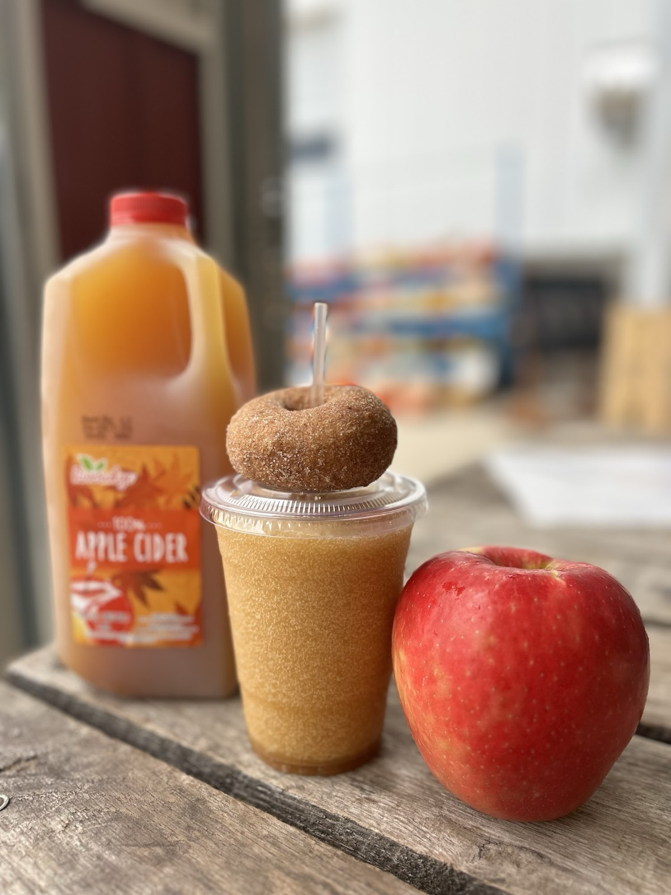

Family owned since 1950
Homegrown apples, big caramel apples & fresh donuts.
Crunchy apples, tree-ripened peaches and pumpkins from our own farm, plus homemade caramel apples, donuts and cider slushies. On Newaygo Road in Casnovia, from August until early November.

Our farm
A family farm market since 1950.
Snappy Apple Farm Market has been family owned since 1950. What you buy here comes off our own trees and fields: fresh, crunchy apples, peaches left on the tree until they are ripe, and pumpkins, decorative pumpkins and gourds for the porch.
The kitchen does the rest. Our large homemade caramel apples are a local favorite, and so are the donuts, made fresh. Add a cider slushie, a jar of local honey or maple syrup and some popcorn, and the drive out to Casnovia is worth it.
See what's at the marketThe season
August to early November.
We open in August and close for the year in early November. Call 616-675-7354 if you want to check what's in before you drive out.
Doors open
The market opens for the season. Tree-ripened peaches are part of what we grow.
Apples & pumpkins
Fresh, crunchy apples, caramel apples, pumpkins, decorative pumpkins and gourds.
Season wraps up
Last chance for a bag of apples, a dozen donuts and a cider slushie until next August.

Visit
Find us on Newaygo Road.
961 Newaygo Rd.Casnovia, MI 49318
| Monday | Closed |
|---|---|
| Tuesday | Closed |
| Wednesday | 9 AM – 5:30 PM |
| Thursday | 9 AM – 5:30 PM |
| Friday | 9 AM – 5:30 PM |
| Saturday | 9 AM – 5 PM |
| Sunday | 11 AM – 5:30 PM |
Open August until early November. We accept WIC Produce Connection.
Good to know
Before you drive out.
When is the market open?
From August until early November. Current hours are Wednesday to Friday 9 AM – 5:30 PM, Saturday 9 AM – 5 PM and Sunday 11 AM – 5:30 PM, closed Monday and Tuesday. If you're coming from far away, call 616-675-7354 first.
Do you grow your own fruit?
Yes. The apples, the tree-ripened peaches and the pumpkins are homegrown on our farm.
Do the caramel apples contain peanuts?
There's a plain Honeycrisp caramel apple and one rolled in peanuts. Both are made in a kitchen that handles peanuts.
Do you accept WIC?
Yes, the market accepts WIC Produce Connection.